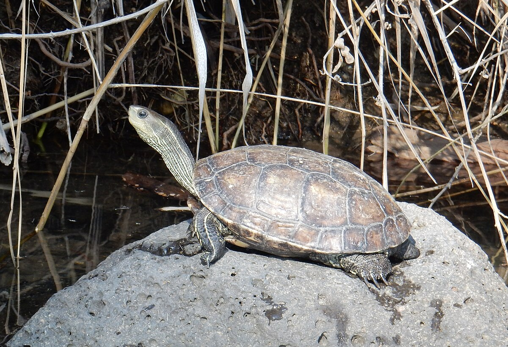

Nasi podopieczni to serce i dusza naszej hodowli żółwi wodnych. W naszym akwarium i oczkach wodnych gościmy różnorodność gatunków żółwi wodnych, każdy z nich o unikalnych cechach i uroku. Chcemy podzielić się z tobą naszą pasją i wiedzą na temat tych fascynujących stworzeń.
Nasza hodowla specjalizuje się w żółwiach strumieniowych. To urocze stworzenia, które zachwycają swoją barwną skorupą i spokojnym charakterem. Dostarczamy im idealne warunki do rozwoju i zapewniamy opiekę na najwyższym poziomie.
żółwica Aneta
Żółwie błotne to fascynujące zwierzęta, które żyją w bagnach i wilgotnych siedliskach. U nas mają odpowiednie warunki do wspinania się i eksplorowania, a także zdrową dietę.

żółw Radosław
Te żółwie charakteryzują się wyjątkowym wzorem na skorupie, który przypomina mapę. Są to piękne i ciekawe stworzenia, którym zapewniamy odpowiednie warunki do rozwoju.

żółw Adam
Żółwie żółtolice to gatunek wyróżniający się charakterystyczną żółtą skorupą, która nadaje im unikalny wygląd. Są one znane z ich spokojnego temperamentu i zdolności do życia w różnorodnych środowiskach wodnych. Nasza hodowla dba o stworzenie dla nich odpowiednich warunków, aby mogły rosnąć zdrowo i szczęśliwie.

żółwie Marek i Mariola
Żółwie żwirowe to gatunek, który żyje w płytkich i żwirowych rzekach oraz strumieniach. Ich zdolność do maskowania się w środowisku oraz umiejętność przemieszczania się na suchym lądzie czynią je fascynującymi stworzeniami. Nasza hodowla zapewnia im dostęp do odpowiednich siedlisk i karmienie, aby zadbać o ich zdrowie i dobrostan.

żółwica Martyna